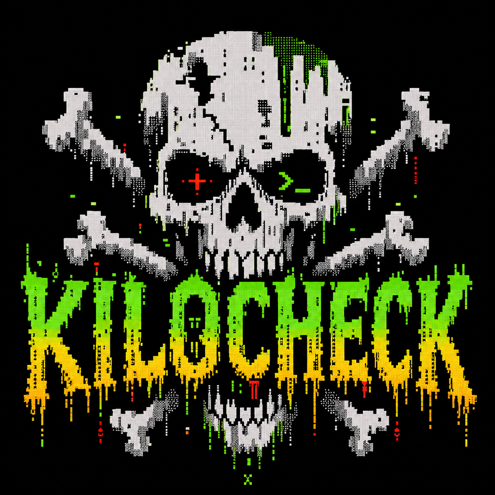

Offline by default
An ordinary check never reaches an intelligence API. The answer is reproducible because the evidence is already local.
Local intelligence / zero lookups
KiloCheck compiles current threat observations into an auditable local snapshot, then checks IPs without asking the network for permission.

The local circuit
The network is used to acquire hashed, versioned data releases—not to judge a target. Every ordinary check runs against the same immutable local facts.
One command. No theater.
Missing, unknown, stale, incomplete, and unsafe are different states. KiloCheck refuses to flatten them into a vibes-based reputation score.
$ kilo check 162.243.103.246 --json
{
"schema": "kilo.command.v1",
"ok": true,
"snapshot_id": "0f3fff…a781c2",
"data": [{
"target": { "type": "ip", "value": "162.243.103.246" },
"verdict": {
"disposition": "critical",
"recommended_action": "block"
},
"observations": [{ "source_id": "feodo-c2" }]
}]
}Observed from the v0.2.0 engine against the published Kilo Data release. Ordinary checks issue zero network syscalls.
The hard contract
An ordinary check never reaches an intelligence API. The answer is reproducible because the evidence is already local.
Verdicts derive from typed observations and independent source groups—not one mutable number with an unknown half-life.
Unknown is not safe. Missing is not clean. Stale and incomplete keep their own exit codes and machine-readable diagnostics.
Transmission ready
Signed provenance. Neighboring SHA-256 checksums. Linux, macOS, and Windows.